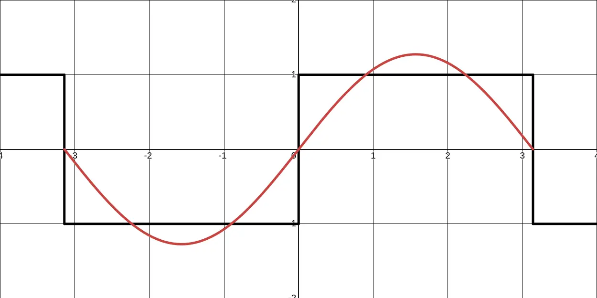

Engineering is about tradeoffs, and this is never truer than when it comes to cost. It takes an awfully large number of produced parts to justify the engineering time to save a few cents each. But for a hobbyist, the choice between using a couple of cheap components you already have versus paying for shipping on a 50-cent dedicated chip can be an easy one. This article is about a cool trick for those situations.
In school, we learn to make a Digital-to-Analog Converter (DAC) using resistor networks. Common examples are the R-2R Ladder, found in chips like the MAX5352, or a switched resistor string, used in the TLV5616. In both cases, a network of internal resistors is used to create a specific output voltage.
While you could recreate these circuits on a PCB using passive and a few GPIOs from your MCU, this has significant drawbacks. Like many DACs they often have high output impedance, making them poor at driving loads directly. For the R-2R you also need well sized resistors which might be hard to find, and for the resistor string you need a large number of analog switches (Propagate exact voltage not just digital 1 or 0). But the real nail in the coffin is the large number of microcontroller pins required for even limited resolution.
So, what if instead of using many pins and components scaling with the desired DAC resolution, we could just use just one pin and a simple filter? This is the core idea behind creating an analog signal by rapidly toggling a digital pin, a technique often called Pulse-Width Modulation (PWM). If we filter the output, it becomes a true analog signal. To understand why, we need to look at what a square wave is really made of.
When we spend a lot of time in the digital domain, it gives the false impression that a square wave is a single, pure signal. But much like a musical chord is built from several individual notes, a square wave is built from its DC average value (the output voltage we want) plus an infinite series of sine and cosine waves at higher frequencies. These higher frequencies are often called harmonics. The more of these harmonics you add together, the more the result looks like a perfect square wave. A 'true' squarewave actually contains harmonics of infinitely high frequency, and is not actually physically possible.
(Tangentially, you can see how on each subsequent wave we remove from the existing peaks and add to the edges. By paying attention to this you can intuitively deduce the frequencies are f, 3f, 5f, 7f and so on.)
This implicit composition of the square wave is the key to our trick. If we can filter out all the high-frequency harmonics, we are left with just the DC average value. We can control this average value by changing the duty cycle, aka the percentage of time the pin is "on" versus "off." A low-pass filter, made from a simple resistor and capacitor (an RC filter), is perfect for this job. And with that, we've created a high-fidelity analog signal with just one pin and two cheap passive components.
Of course, this method comes with its own set of challenges. Here are a couple things to keep in mind:
CPU Utilization: If your microcontroller doesn't have dedicated hardware for PWM, you'll have to toggle the pin using the main processor. This "bit-banging" can consume significant CPU cycles, especially at higher frequencies.
Utility: This trick is more useful on older and cheaper MCUs, there has been a trend towards integration. Many newer mass market MCUs have DACs in surprisingly small packages. Here the main utility of the trick is achieving higher resolution. Additionally, modern ultra low end MCUs might not have dedicated hardware, or high enough clock speeds to pull this off.
Noisy Power: Unlike a real DAC with a dedicated voltage reference, this method is subject to noise on the microcontroller's digital power and ground rails. This digital switching noise can pass through your filter and affect the quality of your analog signal.
Slew Rate vs. Filtering: The same RC time constant that filters out the high-frequency noise also limits how quickly you can change the output voltage (the slew rate). A higher PWM frequency is easier to filter and allows for a faster slew rate, but it can be more demanding on the MCU. A lower PWM frequency requires a larger RC time constant which limits the slew rate.
Crosstalk: Rapidly switching a pin with significant current can cause crosstalk, inducing noise in adjacent traces on your PCB.
Power: Your filter might limit the output impedance to a degree comparable to a discrete DAC. But in some cases, you can even forgo the RC filter entirely if another part of the system acts as a natural low-pass filter. A great example is driving a speaker. The speaker's mechanical properties, the air, and our own ears are all terrible at reproducing the high-frequency harmonics, so we only perceive the intended sound. In these cases, you can use a digital switch like a MOSFET to create a surprisingly effective high-power DAC.
Being clear about what you mean is a skill, being clear in what you mean while avoiding accountability on the consequences is a profession Everybody knows that lying is wrong. Or at the very least, that lying too much will get you in trouble. Everybody...
This is a simple tool that I made to strip HTML out of transcripts I was copying and pasting. I also ocasionally run into situations where there are many superscripts and it gets tedious to remove them all by hand. Just note that the tool is a little i...
A colleague sent me a link. Hours later, I was still deep in a rabbit hole of assembly, auto-vectorization, and benchmarking GCC vs. Clang. One of my long time colleagues Brendan sent me a link that you can view HERE. Naturally, I opened it as soon as ...
One weird trick to reduce the BOM cost of a design you might have used unintentionally used. Engineering is about tradeoffs, and this is never truer than when it comes to cost. It takes an awfully large number of produced parts to justify the engineeri...
This is my most recent Resume, it is accurate as of August 2025. This was the first time I felt like I had enough content to justify two pages. I had been trying to fit on one page by any means necessary, including .1 inch margins and less than 8pt fon...